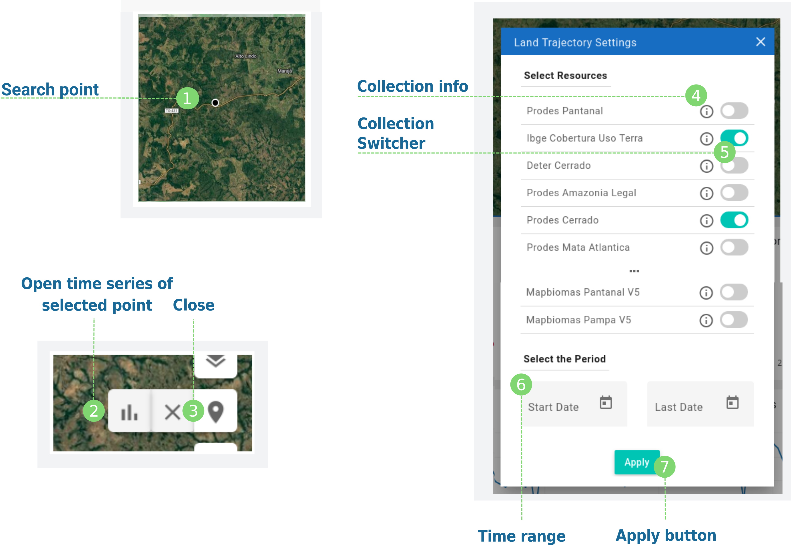
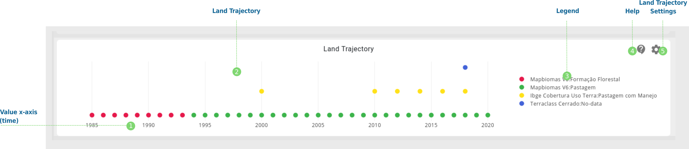

Land Trajectory¶
 Land Trajectory Features¶
You can open the land trajectory by clicking on draw point, draw a point with the cursor on the map and then clicking on graphic button on the sub-menu;
At the top of the land trajectory settings window, you can see the collection list. For each collection there is an information button
At the bottom of the land trajectory settings window, you can can select the start and end date of the search;
Inside the window, we present each of the collection as a switcher with a collection name, select it to add to the search;
Additional Features¶
It is possible to simultaneously view the trajectory of land use and land cover of several data sets in the time interval selected in the search;